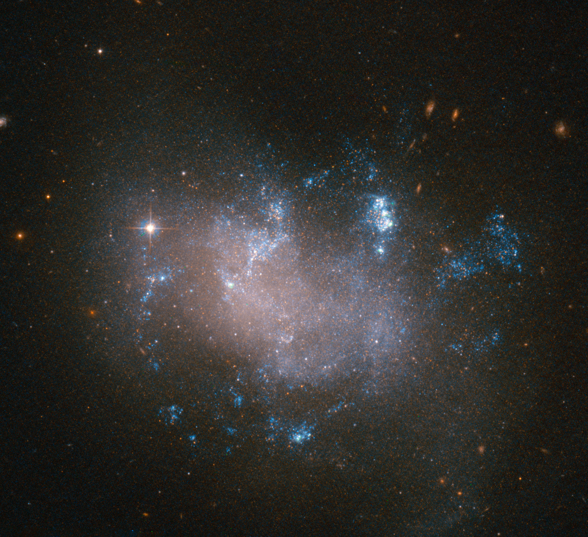

Failed Supernovae and Direct Black Hole Formation:
Mechanisms and Observational Evidence
Abstract:
Failed supernovae represent a unique and critical pathway in the lifecycle of massive stars, leading to black hole formation without the explosive outflows typically associated with supernova events. These phenomena challenge traditional models of stellar evolution and provide insight into the demographics of black holes, their mass distribution, and their connection to gravitational wave events. This article explores the mechanisms behind failed supernovae, observational challenges, implications for stellar evolution and black hole mass distribution, and future directions for research, with an emphasis on connecting theoretical predictions to observational evidence.
The galaxy UGC 12682 gained attention due to the apparent disappearance of a massive star, likely the result of a failed supernova. Instead of exploding, the star may have collapsed directly into a black hole, leaving no visible explosion behind. This event provides key evidence for the existence of failed supernovae.Credit:ESA/Hubble & NASA
Introduction
Massive stars often end their lives in spectacular supernova explosions, dispersing heavy elements into the cosmos and leaving behind neutron stars or black holes. While traditional models emphasize supernovae as the primary end-state for massive stars, theoretical studies suggest that a significant fraction may fail to explode when some massive stars experience a quieter but equally intriguing path which is known as a failed supernova, where the collapsing core of a massive star is unable to generate the outward shock necessary to disrupt the stellar envelope leading to direct black hole formation without producing a visible explosion.
These silent events are critical for understanding the missing population of isolated black holes and their role in shaping galactic evolution. They are particularly relevant in the context of gravitational wave astronomy, as they contribute to the mass distribution of black holes detected in binary mergers. Moreover, failed supernovae may help resolve discrepancies in observed supernova rates and the apparent absence of very massive progenitor stars in surveys. Additionally, they offer valuable insights into the physics of core collapse, the role of neutrinos in supernova explosions, and the conditions under which a dying star can avoid an explosive fate.
Mechanism of Failed Supernovae
Failed supernovae occur when a massive star's core collapses under gravity without producing the shockwave necessary to expel its outer layers. Several critical factors contribute to this outcome:
Core Mass: The core mass of a star determines the possibility of forming a black hole instead of a neutron star. When the core exceeds the Tolman-Oppenheimer-Volkoff (TOV) limit—approximately 2–3 solar masses—the neutron degeneracy pressure becomes insufficient to counteract gravity. As a result, the core collapses directly into a black hole.
Failure of the Shockwave: In a standard supernova, the core collapse produces a bounce that triggers a shockwave, which is then revived by neutrino heating, expelling the outer layers. However, in failed supernovae, the shockwave stalls—unable to overcome the star's gravitational pull—due to rapid energy loss, primarily through an intense burst of neutrinos. As a result, the system cools quickly, and if neutrino heating is insufficient to re-energize the shock, the core continues to collapse, dragging the outer layers inward and ultimately forming a black hole without a visible explosion.
Metallicity and Rotation: Low-metallicity stars (those with fewer heavy elements) experience weaker stellar winds, allowing them to retain more mass throughout their lifetime. This increases the likelihood that the core will exceed the TOV limit, favoring direct collapse. Additionally, a star’s rotation rate influences angular momentum distribution within the collapsing core, potentially delaying or altering the collapse dynamics. Rapid rotation may lead to the formation of an accretion disk around the newly formed black hole, which could generate faint electromagnetic or neutrino signals.
This combination of factors results in a silent collapse, contrasting sharply with the violent outbursts of traditional supernovae. While these events are difficult to observe directly, their effects—such as the sudden disappearance of a massive star—offer potential avenues for detection.
Observational Evidence
Detecting failed supernovae presents significant challenges due to their lack of visible outflows. However, advancements in observational techniques have led to the identification of potential candidates and provided indirect evidence for their existence:
Disappearing Stars:
One of the most intriguing aspects of failed supernovae is the concept of "disappearing stars," which gradually fade from view without an observable explosion. An example is the case of N6946-BH1, a red supergiant in the Fireworks Galaxy that suddenly vanished without a supernova signature. This suggests that the star collapsed directly into a black hole, leaving behind no remnant or explosive event.
Neutrino Detection:
During the collapse of a star's core, neutrinos are emitted in vast quantities. Neutrinos interact weakly with matter and can escape the collapsing core, providing vital information about the event. Large neutrino detectors, such as the IceCube Neutrino Observatory, play a crucial role in providing indirect evidence for failed supernovae by detecting the neutrino burst associated with such events.
Gravitational Wave Astronomy:
Failed supernovae contribute to the population of isolated black holes, which could later merge in binary systems. These mergers, observed by gravitational wave detectors like LIGO and Virgo, may provide additional evidence for the existence of failed supernovae. The black holes formed from such events would exhibit distinctive characteristics, such as high masses and no associated supernova remnants.
Transient Surveys:
Observatories that conduct wide-field surveys, such as the Zwicky Transient Facility (ZTF) and the upcoming Vera Rubin Observatory, are instrumental in detecting faint and transient events. These surveys can help identify disappearing stars and weak transients that might indicate failed supernovae, further advancing our understanding of their frequency and distribution.
![This pair of visible-light and near-infrared Hubble Space Telescope photos shows the giant star N6946-BH1 before and after it vanished out of sight by imploding to form a black hole. The left image shows the 25 solar mass star as it looked in 2007. In 2009, the star shot up in brightness to become over 1 million times more luminous than our sun for several months. But then it seemed to vanish, as seen in the right panel image from 2015. A small amount of infrared light has been detected from where the star used to be. This radiation probably comes from debris falling onto a black hole. The black hole is located 22 million light-years away in the spiral galaxy NGC 6946.](../images/stob.jpg)
This pair of visible-light and near-infrared Hubble Space Telescope photos shows the giant star N6946-BH1 before and after it vanished out of sight by imploding to form a black hole. The left image shows the 25 solar mass star as it looked in 2007. In 2009, the star shot up in brightness to become over 1 million times more luminous than our sun for several months. But then it seemed to vanish, as seen in the right panel image from 2015. A small amount of infrared light has been detected from where the star used to be. This radiation probably comes from debris falling onto a black hole. The black hole is located 22 million light-years away in the spiral galaxy NGC 6946.
Implications for Stellar Evolution
Failed supernovae have profound implications for stellar evolution and the models used to predict the outcomes of massive star deaths:
Revised Stellar Evolution Models:
Traditional stellar evolution models generally assume that all massive stars end in explosive supernovae. The discovery of failed supernovae challenges this assumption and necessitates revisions to stellar population synthesis models, which attempt to predict the overall characteristics and demographics of stellar populations.
Isolated Black Holes:
Unlike traditional supernovae, which expel mass into space, failed supernovae result in the direct formation of black holes, leading to the creation of "dark" black holes with no observable remnants. These black holes could make up a significant portion of the unseen black hole population in the galaxy, contributing to the unexplained dark matter component in the universe.
Stellar Remnants and Galaxy Evolution:
The presence of failed supernovae in the evolutionary history of galaxies has implications for galaxy evolution. The lack of material ejected into the interstellar medium may affect the chemical enrichment of galaxies and influence star formation rates and the evolution of large-scale cosmic structures.
Relation to Black Hole Mass Distribution
Failed supernovae are crucial for understanding the mass distribution of stellar-mass black holes, particularly those with masses exceeding 20 solar masses. In standard supernovae, much of the progenitor star's mass is ejected, limiting the final mass of the resulting black hole. In contrast, failed supernovae retain more mass, leading to the formation of heavier black holes.
Mass Gap and Gravitational Wave Astronomy:
Observed Mass Gap:
Gravitational wave detections, such as those observed by LIGO, have revealed a "mass gap" between the masses of stellar-mass black holes and intermediate-mass black holes. Failed supernovae could help explain this gap by forming black holes in this intermediate mass range.
Binary Black Hole Mergers:
The dynamics of failed supernovae can also influence binary black hole mergers. These mergers are key sources of gravitational waves, and understanding the origin of the black holes involved can shed light on the frequency and characteristics of these events.
Speculations and Future Directions
Primordial Black Holes and Dark Matter:If failed supernovae were more common in the early universe, they could contribute to the formation of primordial black holes. These ancient black holes, formed from the collapse of early-generation stars, might account for some of the dark matter that constitutes a significant portion of the universe’s mass.
Advancements in Observational Techniques:
Neutrino and Gravitational Wave Detectors:
Future advancements in neutrino detection and gravitational wave observatories will help improve the sensitivity and accuracy of detecting failed supernovae. The discovery of more failed supernovae could provide valuable insights into the formation and evolution of black holes, as well as their role in the cosmic landscape.
Machine Learning and Data Mining:
The application of machine learning and data mining techniques to transient survey data could revolutionize the identification of failed supernovae. By recognizing patterns in large datasets, these methods could identify previously overlooked events and refine our understanding of these phenomena.
High-Resolution Simulations: To further understand the intricate physics behind failed supernovae, future computational simulations must model the impact of factors such as stellar rotation, metallicity, and magnetic fields on the collapse process. These simulations can provide predictive insights into the frequency of failed supernovae and their role in black hole formation.

Numerical-relativity simulations of the first binary black-hole merger observed by the Advanced LIGO detector on September 14, 2015.
Conclusion:
Failed supernovae offer a quiet but profound insight into the end stages of stellar evolution. These events challenge traditional models of supernovae and black hole formation, providing new perspectives on the demographics of black holes and their contributions to gravitational wave events. As observational techniques continue to improve, the study of failed supernovae will reveal further details about the nature of massive stars and their role in the broader cosmic picture. Their implications for stellar evolution, black hole formation, and gravitational wave astronomy make them a critical area of ongoing research.
References:
1. Fryer, C. L. (1999). "Mass Limits For Black Hole Formation." The Astrophysical Journal, 522(1), 413–418.
2. Smartt, S. J. (2009). "Progenitors of Core-Collapse Supernovae." Annual Review of Astronomy and Astrophysics, 47, 63–106.
3. Pastorello, A., & Fraser, M. (2019). "Supernova impostors and other gap transients." Nature Astronomy, 3, 676–679.
4. Fogli, G. L., Lisi, E., Mirizzi, A., & Montanino, D. (2005). "Probing supernova shock waves and neutrino flavor transitions in next-generation water-Cherenkov detectors." Journal of Cosmology and Astroparticle Physics, 2005(04), 002.
5. Agarwal, B., et al. (2017). "Effects of binary stellar populations on direct collapse black hole formation." Monthly Notices of the Royal Astronomical Society: Letters, 468(1), L82–L86.